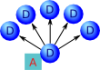

Overview
The goal of Diffusive Programming is to make task-oriented distributed computing easier by separating the execution logic from the distribution logic. Diffusive programming, defined by a set of six principles, is an approach for performing method-level, task-oriented distributed computing. In diffusive programming, any method can be marked for distribution, regardless of its signature. And marking a method is necessary and sufficient for its execution to be distributed. Distribution of tasks occurs through a network of nodes that can accept tasks and execute them, or forward them on. Nodes executing a task, load the required resources as needed, and cache them. The topology of the network of nodes can be anything that can be represented as a directed graph. Topologies can be tailored to solve specific problems. Diffusive is a Java reference implementation of the six principles that define diffusive programming.
Introduction
Task-oriented distributed computing allows independent computational tasks to be distributed to multiple computing nodes, presumably to execute in parallel. This approach can reduce the overall compute time of a set of independent tasks. For example, in quantitative finance, one may desire to calculate risk metrics for each financial instrument contained in a large portfolio. When the calculation of the desired risk metrics for each instrument is independent of the calculation for all other instruments, the risk metrics of each instrument can be calculated independently. In this case, we can speed up the risk metrics calculation for the portfolio by spreading these independent tasks over many compute nodes at once, and then collecting the results.
Typically this type of distribution is performed by a distribution middleware. In many cases, the application makes calls to the middleware's application programming interface (API). The computational task may be represented by an object whose class implements an interface that represents a compute task as defined by the middleware. Including middleware API calls in the application code couples the application to the middleware. And more concerning, the application is now polluted with code used to distribute execution to remote compute nodes. Clearly, with careful design, much of that distribution logic can be hidden behind wrappers that allow the application logic to interact with an abstract compute engine, instead. And, the compute engine could be implemented to execute locally or remotely. But even this approach doesn't overcome the constraints imposed by the requirement that computational tasks implement a specific interface.
Distribution middleware may also require deployment of certain resources (dynamic libraries, class files, etc) to the compute nodes before they can execute remote requests. This requires careful synchronization of versioned resources. And this renders the compute nodes generic, only insofar as the required resources have been deployed to that node.
Diffusive programming is based on a set of six principles intended to facilitate the development of task-oriented distributed applications. it is an approach for performing task-oriented distributed computing that allows the execution of individual methods to be distributed. Any method can be distributed, regardless of its signature. And aside from specifying that a method is to be distributed, no further code changes are required. Furthermore, Diffusive programming allows the application code to define the execution logic (i.e. the order and concurrency of the execution threads) without having to explicitly implement how tasks are distributed---the implementation of the diffusive programming principles manages the distribution of marked methods.
The next section, Principles of Diffusive Programming, provides a concise version of the principles and defines additional terms used throughout the rest of the paper. The subsections that follow the list of principles describe each principle in more detail. With the principles defined and explained, section Diffusion Patterns, puts forth a few network topologies, or patterns, that are possible through diffusive programming. And section Reference Implementation, describes Diffusive, the Java reference implementation of the diffusive programming principles. Finally, section Future Work, presents future work to be done on diffusive.
Principles of Diffusive Programming
Diffusive programming is based on six principles that define a framework for performing task-oriented distributed computing. The six principles are ordered. They build on each other, progressing from the action of distributing the code to the deployment and configuration of the computation nodes.The Principles
- Marking
-
A method can be marked for remote execution. The act of marking, alone, is
sufficient and necessary for a method to be executed on a remote location and have the results returned.
Definition: A diffusive method is a method that has been marked.
- Location Hiding
-
Code calling a diffusive method does not, and can not, know on which
resource that method was executed. This helps keep code cohesive by removing distribution logic
from the application.
Definition: A diffuser is what executes a diffusive method.
Definition: A diffused method is a diffusive method that was executed by a diffuser.
- Best-Efforts Failure Resolution
-
A diffuser will attempt to recover from a
diffusive failure. If the diffuser is unable to recover, it will transfer error
handling to a specified handler or report the error as a local error.
Definition: A diffusive failure is a the failure of a remote diffuser to execute a diffusive method, or the loss of connectivity to a remote diffuser.
- Generic Computation
- Any diffusive method can be executed by any diffuser. A diffuser need not be configured with resources prior to the request to execute a method.
- Indistinguishability
- A diffuser is responsible for executing any diffusive method, and it is also responsible for diffusing methods to other diffusers. This implies that a diffuser must be able to act both as a client and and as a server.
- Open Topology
-
Diffusers can be connected in any topology that can represented as a directed graph. Each node
in the directed graph represents a diffuser. Each directed edge represents a connection from one
diffuser to another. The direction of the edge represents the direction of the diffusion.
And, each diffuser may contains connections to a set of other diffusers.
Definition: A diffuser network is a set of connected diffusers.
Definition: Suppose we have two diffusers, A and B. We say that B is an end-point of A, if A diffuses methods to B.
Marking
Diffusive programming allows the execution of individual methods to be distributed. Marking a method is the act of specifying that a specific method is to be distributed. How a method is marked is up to the implementation of this principle. However, this principle does state that the act of marking a method is necessary and sufficient for the method to be distributed. This means that any method can be marked, and, therefore, executed, regardless of its name, parameters, or return type. This is a departure from many typical task-orient approaches that require the implementation of task interfaces, where the method to be executed has a defined signature (and return type).
The way a method is marked, to become a diffusive method, depends on the implementation of this principle. For example, the reference implementation written in Java currently uses annotations to mark methods. However, it could just as easily allow the fully qualified method names to be specified in a configuration file instead.
The act of marking a method decouples the distribution logic from the application logic. And this leads us to the next principle: location hiding.
Location Hiding
Marking a method tells the diffusive framework that that method is to be executed in a distributed manner. But it is the principle of location hiding that places the requirement that any code calling a diffusive method does not know, or need to know, where that method is executed. Removing the responsibility of knowing or having to deal with the consequences of where the method is executed relieves the calling code of any responsibility regarding distribution. And this allows the application code to remain cohesive. It also means that the same code can be called in a distributed manner, or to run completely locally with any change to the application logic.
In typical distributed systems, the distribution logic must be called directly from the application code. This may occur by calling low level application programming interfaces (API) such as in MPI, or writing task classes that implement interfaces defined by the distribution framework, and then modifying application code to deliver these tasks to the middleware.
Location hiding allows code to be endowed with its execution logic, and that execution logic is then automatically mirrored, but in a distributed manner, simply by marking the method(s). When this is coupled with the next principle, generic computation, we have a powerful and simple mechanism to distribute computation.
Best-Efforts Failure Resolution
A task that is called and executed completely within a local address space (for example, code running entirely in one process). may fail to return a result. The failure may occur because an input or logic error, and in this case, it may be possible to trap and handle the error condition. In other cases, the failure may occur because of an unanticipated bug\footnote{As opposed to the anticipated bug.} or because the server crashed. Under these conditions it may not be possible to trap and handle the error condition, and the entire application may crash or become unresponsive. In both scenarios, however, the fact that there was a failure is known because it due to either the code trapping the error, or the user because the application crashed.
The situation may be quite different when a task is called from one address space and executed in another. For example, suppose the application-attached diffuser diffuses a method to a remote diffuser. Now suppose further that the task fails to execute because of an input or logic error. If the remote diffuser traps the error, it could return an error condition which is return, and again trapped by the application-attached diffuser, and handled as in the non-distributed case. However, suppose instead that the input or logic error isn't trapped, or if there is a bug that causes the task to crash, or if the server crashes, or if the network connection goes down. In this case, the application-attached diffuser waits for the result, but doesn't receive one. Yet, the application-attached diffuser doesn't know if the task is still executing, or if there was a failure.
The best efforts failure resolution principle requires that the application doesn't see a difference between a purely local and a distributed failure. The diffuser making the request is expected to perform its best to recover from a diffusive failure, and if it can't, then it reports the error. For example, diffusers could provide a status service that responds if the diffuser is running and accessible. If the requesting diffuser finds that the status of the remote server is down, then it diffuses the method to a different diffuser. It may attempt to send the task to a different diffuser a configured-number of times before giving up and reporting an error.
Generic Computation
The principle of generic computation provides that any method can be executed on a diffuser without out the need to deploy the resource needed to execute that diffused method. Simply put, the shared object libraries or classes don't need to be deployed to the remote server prior to making the request. Each diffuser must contain a mechanism for providing resources to remote locations and for loading resources from a remote location.
In typical distributed computing, required resources must be deployed to the remote servers prior to requesting remote execution of a specific task. Diffusive programming removes this restriction by requiring that the mechanism which distributes the method execution also provides a capability to deliver the required resources to execute the method.
Note that, however, this does not prevent users from deploying resources to a common location from which they can be obtained at run-time. Under certain deployment scenarios, it may be desirable to have such a common location to provide a centralized control over the versions. But even in this case, the resources need only be deployed to the one common area.
Indistinguishability
The principle of indistinguishability means that a diffuser must be able to receive requests to execute, and at the same time be able to diffuse (forward) those requests to another diffuser. In other words, there isn't such a thing as a client diffuser and a server diffuser: they are one and the same.
The generic computation principle alluded to this principle of indistinguishability. The generic computation principle states that a diffuser must be able to load resources from a remote diffusers, and at the same time must be able to provide resources to a remote diffuser.
Open Topology
The open topology principle, coupled with the indistinguishability principle, requires that it is possible to create networks of diffusers, called diffuser networks, in any topology that can be represented as a directed graph. Each node in the directed graph represents a diffuser, and each (directed) edge connects that diffuser to an end-point, which is another diffuser. Any network that can be represented by a directed graph can be constructed.
This principle allows the construction of networks tailored to solve specific or general problems, networks that can naturally learn/discover an optimal configuration for performing certain types of tasks, or networks that contain sufficient redundancy to provide execution within required timelines. Section \ref{sec:diffusion_patterns}, \nameref{sec:diffusion_patterns}, describes a few possible network topologies (patterns) that are designed to solve specific problems.
Diffusion Patterns
Diffusion patterns are made possible by the last three diffusive programming principles: generic computing; indistinguishability, and open topology. Together, these three principles make the statement that diffusers form building blocks that can be connected as directed graphs. The principle of open topology requires that a diffuser be connected to zero or more end-points to which it can diffuse execution of a method. The principle of indistinguishability states that each end-point, itself, must be a diffuser. This means that that diffuser itself is connected to zero or more other end-points. And, therefore, it can receive tasks as well as diffuse them. Finally, the principle of generic computing requires that a diffuser be able to receive (and send) resources needed to execute a task, allowing tasks to be diffused to other nodes dynamically and executed.
Because any diffuser network that can be represented as a directed graph is possible to construct, there are an infinite number of patters in which these networks can be constructed. And furthermore, their dynamic nature also allows the networks to evolve over time. In the next subsections I describe three illustrative patterns that solve specific problems.
Finally, it is important to emphasize that it is the marking principle and the location hiding principle that require the diffusive framework to provide a mechism for intercepting marked method calls and handing them to the (local) diffuser assigned to the application. It is that (local) diffuser that then takes care of diffusing the execution of the marked method to other remote diffusers for execution. Therefore, all the topologies have this characteristic in common.
Layered
The layered topology is the simplest, and most similar to many distributed middleware solutions. In this topology, the diffuser collocated with the application, which we will call the application-attached diffuser, is connected to a set of end-points, which we call the remote diffusers. The application-attached diffuser, depending on the specifics of its configuration, is responsible for distributing the tasks to the the remote diffusers. The remote diffusers execute the task and return the results to the application-attached diffuser, which returns the results to the application\footnote{In the discussion about the reference implementation, Diffusive, I'll provide details on how these steps can be implemented.}.
Single Layered
The figure below shows the simplest topology---a single layered diffuser network. In this figure, the circles label with D are diffusers, the square at the bottom label with A is the application containing the methods to be diffused. In this topology, the application-attached diffuser is responsible for distributing the tasks to the remote diffusers. The remote diffusers execute their assigned task and return the result to the application-attached diffuser, which then returns it to the application.

Although not covered in the diffusive principles, because it is an implementation detail, it is worth noting at this point that any implementation must address the strategy used to distribute the tasks amongst the diffusers---local and remote. The reference implementation Diffusive provides a \textsf{Strategy} interface that can be implemented to provide a specific strategy based on CPU load, number of executing threads, weighting, or some other scheme. Clearly, the implementation of such a strategy will effect the performance characteristics of the diffusive network.Multi-Layered
\subsubsection{Multi-Layered} A natural extension of the single-layered diffuser pattern is a multi-layered diffuser pattern. One such pattern is shown in figure \ref{fig:topology_multi_layer}. Implementations of the diffusive principles that allow nested method marking allow tasks to be diffused that, themselves, contain subtasks that are to be diffused. This type of topology can dramatically improve the performance of calculations that can be represented as tasks of subtasks. An illustrative example is a calculation that is composed of a set of independent calculations, where each of these independent calculations are themselves composed of a set of independent calculations.